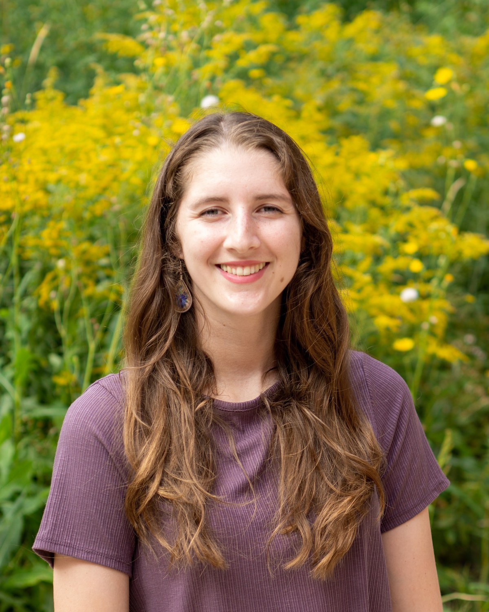

PhD Candidate · Department of Biological Sciences · University of Wisconsin-Milwaukee
Madison Rittinger
I am a behavioral ecologist who is broadly interested in understanding how and why animals behave the way they do using a cognitive perspective. To investigate these questions, I use a variety of field and lab-based techniques ranging from field experiments to microCT imaging. Outside of research I am passionate about teaching in higher education and mentoring undergraduate researchers. One of my career goals is to give undergraduates research experiences I did not have access to when I was in their position. Outside of work I thoroughly enjoy being outside, playing board games, playing/watching basketball, and antagonizing my cat — Ollie.
Field collections + behavior trials, summer 2026

news
selected publications
Placeholder publication title goes here
Rittinger, M., and coauthors. Journal of Placeholder Ecology, 2026.
A second placeholder publication for scroll depth
Rittinger, M., and coauthors. Behavioral Placeholder Letters, 2025.